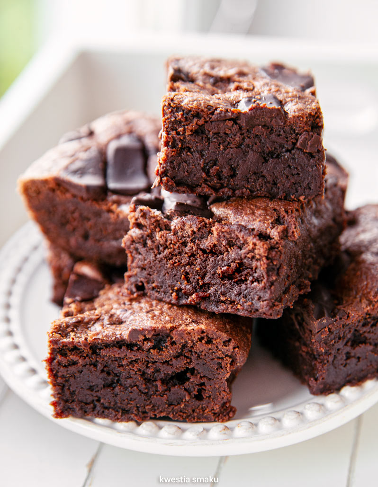

Chocolate Brownie

Descriptions
Prep: 15 mins Cook: 30 mins Total: 45 mins Servings: 16 Yield: 16 brownies
Ingredients
- ½ cup butter
- 1 cup white sugar
- 2 eggs
- 1 teaspoon vanilla extract
- ⅓ cup unsweetened cocoa powder
- ½ cup all-purpose flour
- ¼ teaspoon salt
- ¼ teaspoon baking powder
Frosting:
- 3 tablespoons butter, softened
- 3 tablespoons unsweetened cocoa powder
- 1 tablespoon honey
- 1 teaspoon vanilla extract
- 1 cup confectioners' sugar
Instructions
- Preheat oven to 175 degrees C. Grease and flour an
8-inch square pan.
- In a large saucepan, melt 1/2 cup butter. Remove from heat, and
stir in sugar, eggs, and 1 teaspoon vanilla. Beat in 1/3 cup cocoa,
1/2 cup flour, salt, and baking powder. Spread batter into prepared
pan.
- Bake in preheated oven for 25 to 30 minutes. Do not overcook.
- Remove brownies from the oven, and make frosting. Combine 3
tablespoons softened butter, 3 tablespoons cocoa, honey, 1 teaspoon
vanilla extract, and 1 cup confectioners' sugar.
Stir until smooth.
- Frost brownies while they are still warm.
Nutrition
Per Serving: 183 calories; protein 1.8g; carbohydrates 25.7g;
fat 9g; cholesterol 44.2mg; sodium 109.7mg.
^ Lift up ^
Home page